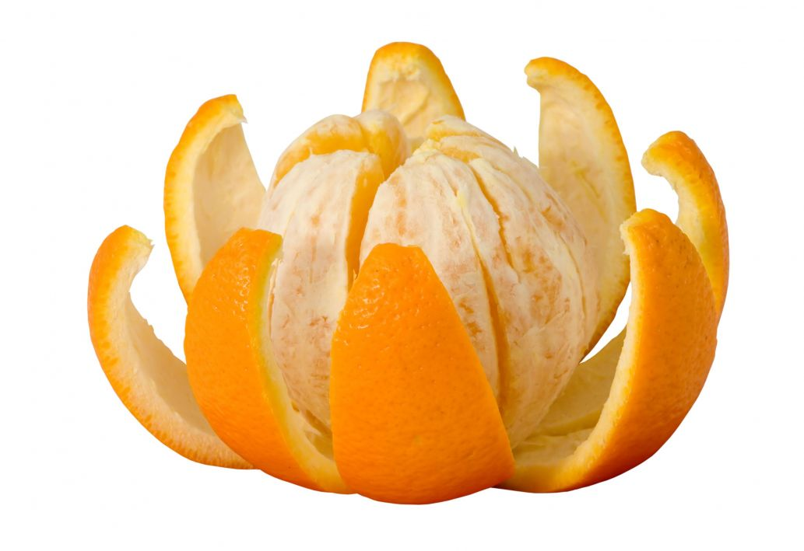
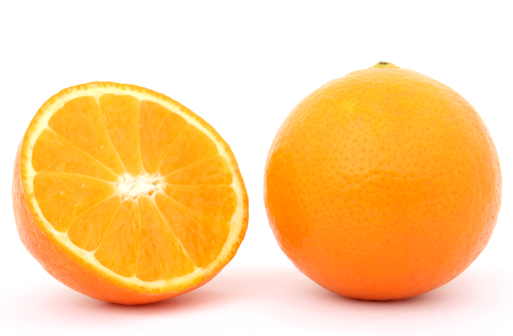

Delicious and juicy orange fruit contains an impressive list of essential nutrients, vitamins, minerals for normal growth and development and overall well-being. Botanically; orange is the citrus fruit belonging in the Rutaceae family, of the genus; Citrus. The genus citrus also includes other related species of oranges such as pomelo, tangerine (mandarin orange), yuzu, lemon, and grapefruit.
 